File: 000750.gt.txt (if the image is defective, simply delete all Arabic text and the line will be excluded)
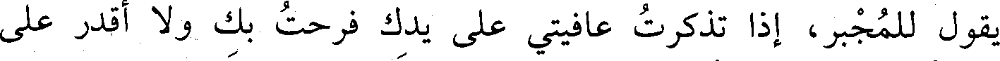
يقول للمجبر، إذا تذكرت عافيتي على يدك فرحت بك ولا أقدر على
File: 000751.gt.txt (if the image is defective, simply delete all Arabic text and the line will be excluded)
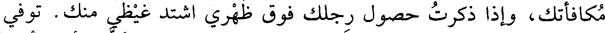
مكافأتك، وإذا ذكرت حصول رجلك فوق ظهري اشتد غيظي منك. توفي
File: 000752.gt.txt (if the image is defective, simply delete all Arabic text and the line will be excluded)
في أواخر المحرم. وكانت مدة إمارته شهرين ونصف، وخلف ألف ألف
File: 000753.gt.txt (if the image is defective, simply delete all Arabic text and the line will be excluded)
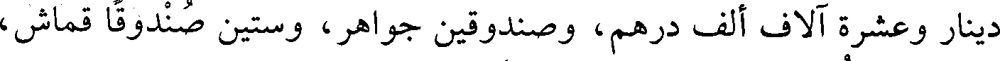
دينار وعشرة آلاف ألف درهم، وصندوقين جواهر، وستين صندوقا قماش،
File: 000754.gt.txt (if the image is defective, simply delete all Arabic text and the line will be excluded)
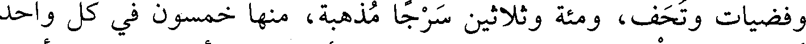
وفضيات وتحف، ومئة وثلاثين سرجا مذهبة، منها خمسون في كل واحد
File: 000755.gt.txt (if the image is defective, simply delete all Arabic text and the line will be excluded)
ألف دينار حلية، وست مئة سرج فضة، وأربعة عشر ألف ثوب من أنواع
File: 000756.gt.txt (if the image is defective, simply delete all Arabic text and the line will be excluded)
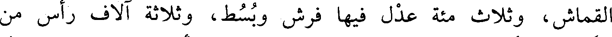
القماش، وثلاث مئة عدل فيها فرش وبسط، وثلاثة آلاف رأس من
File: 000757.gt.txt (if the image is defective, simply delete all Arabic text and the line will be excluded)
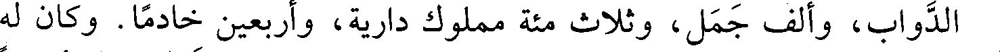
الدواب، وألف جمل، وثلاث مئة مملوك دارية، وأربعين خادما. وكان له
File: 000758.gt.txt (if the image is defective, simply delete all Arabic text and the line will be excluded)
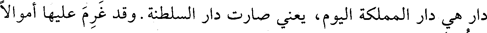
دار هي دار المملكة اليوم، يعني صارت دار السلطنة. وقد غرم عليها أموالا
File: 000759.gt.txt (if the image is defective, simply delete all Arabic text and the line will be excluded)
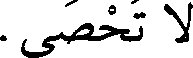
لا تحصى.
File: 000760.gt.txt (if the image is defective, simply delete all Arabic text and the line will be excluded)
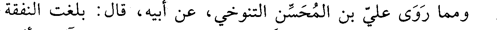
ومما روي علي بن المحسن التنوخي، عن أبيه، قال : بلغت النفقة
File: 000761.gt.txt (if the image is defective, simply delete all Arabic text and the line will be excluded)
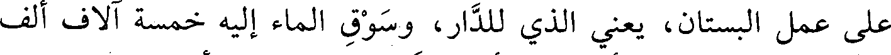
على عمل البستان، يعنى الذي للدار، وسوق الماء إليه خمسة آلاف ألف
File: 000762.gt.txt (if the image is defective, simply delete all Arabic text and the line will be excluded)
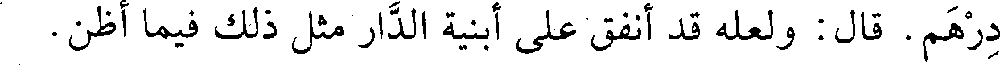
درهم. قال : ولعله قد أنفق على أبنية الدار مثل ذلك فيما أظن.
File: 000763.gt.txt (if the image is defective, simply delete all Arabic text and the line will be excluded)
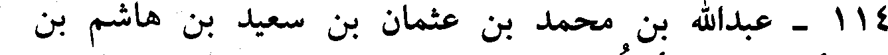
114 - عبدالله بن محمد بن عثمان بن سعيد بن هاشم بن
File: 000764.gt.txt (if the image is defective, simply delete all Arabic text and the line will be excluded)
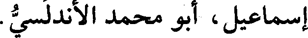
إسماعيل، أبو محمد الأندلسي.
File: 000765.gt.txt (if the image is defective, simply delete all Arabic text and the line will be excluded)
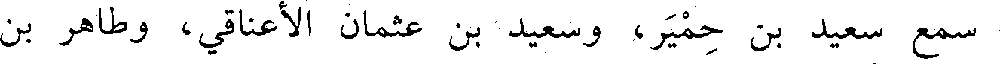
سمع سعيد بن حمير، وسعيد بن عثمان الأعناقي، وطاهر بن
File: 000766.gt.txt (if the image is defective, simply delete all Arabic text and the line will be excluded)
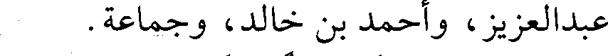
عبدالعزيز، وأحمد بن خالد، وجماعة.
File: 000767.gt.txt (if the image is defective, simply delete all Arabic text and the line will be excluded)
وكان محدثا ضابطا ثقة؛ سمع منه جماعة، وتوفي في ربيع الآخر(2).
File: 000768.gt.txt (if the image is defective, simply delete all Arabic text and the line will be excluded)
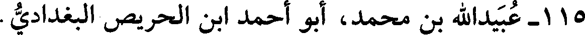
115 - عبيدالله بن محمد، أبو أحمد ابن الحريص البغدادي.
File: 000769.gt.txt (if the image is defective, simply delete all Arabic text and the line will be excluded)
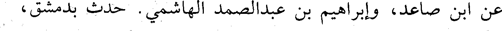
عن ابن صاعد، وإبراهيم بن عبدالصمد الهاشمي. حدث بدمشق،
File: 000770.gt.txt (if the image is defective, simply delete all Arabic text and the line will be excluded)
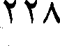
228
File: 000771.gt.txt (if the image is defective, simply delete all Arabic text and the line will be excluded)
سنة ثنتين وستين وثلاث مئة
File: 000772.gt.txt (if the image is defective, simply delete all Arabic text and the line will be excluded)
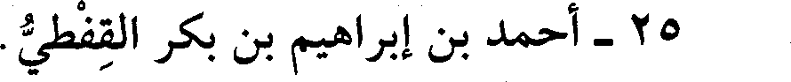
25 - أحمد بن إبراهيم بن بكر القفطي.
File: 000773.gt.txt (if the image is defective, simply delete all Arabic text and the line will be excluded)
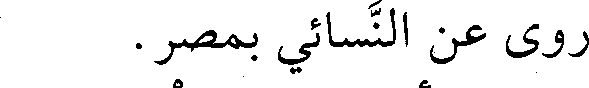
روى عن النسائي بمصر.
File: 000774.gt.txt (if the image is defective, simply delete all Arabic text and the line will be excluded)
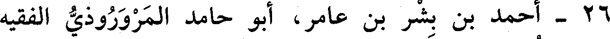
26 - أحمد بن بشر بن عامر، أبو حامد المروروذي الفقيه
File: 000775.gt.txt (if the image is defective, simply delete all Arabic text and the line will be excluded)
الشافعي، نزيل البصرة.
File: 000776.gt.txt (if the image is defective, simply delete all Arabic text and the line will be excluded)
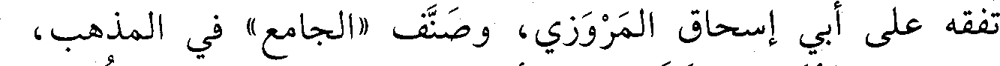
تفقه على أبي إسحاق المروزي، وصنف «الجامع» في المذهب،
File: 000777.gt.txt (if the image is defective, simply delete all Arabic text and the line will be excluded)
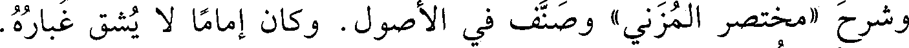
وشرح «مختصر المزني» وصنف في الأصول. وكان إماما لا يشق غباره.
File: 000778.gt.txt (if the image is defective, simply delete all Arabic text and the line will be excluded)
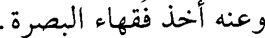
وعنه أخذ فقهاء البصرة.
File: 000779.gt.txt (if the image is defective, simply delete all Arabic text and the line will be excluded)
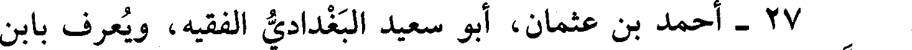
27 - أحمد بن عثمان، أبو سعيد البغدادي الفقيه، ويعرف بابن
To Save: `Ctrl+s`, make sure to choose `Webpage, complete`!